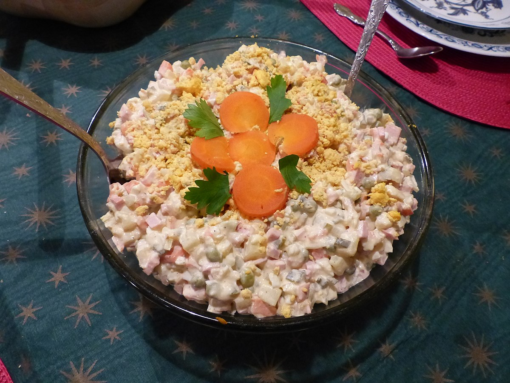

Olivie

Ingredients
- 3/4 lb meat, cubed
- 3 potatoes, cooked and cubed
- 3 carrots, cooked and cubed
- 6 eggs, cooked and cubed
- 3 dill pickles, cubed
- 1 sweet onion, cubed
- 1 cup frozen fresh peas
- 1/2 english cucumber (2 small cuces), cubed
- 1 cup mayo
- Dill to taste
- Salt and pepper, to taste
- 1/2 tsp sugar, optional
Instructions
- In a large pot, add potatoes and carrots. Cover completely with water.
Bring to a boil and cook about 20-25 minutes or until a knife pierces through easily.
(Don’t overcook. Remove carrots and potatoes from water, set aside to cool).
- In a small pot, add eggs, cover eggs will water and bring to a boil cook. Cook eggs 8-10 minutes.
- Cube all of the ingredients.
- Combine everything, mix. Add mayo to taste. You may need a little more than 1 cup, depending on sizes of your ingredients.
- Season with salt, pepper and sugar. Add fresh dill, mix.